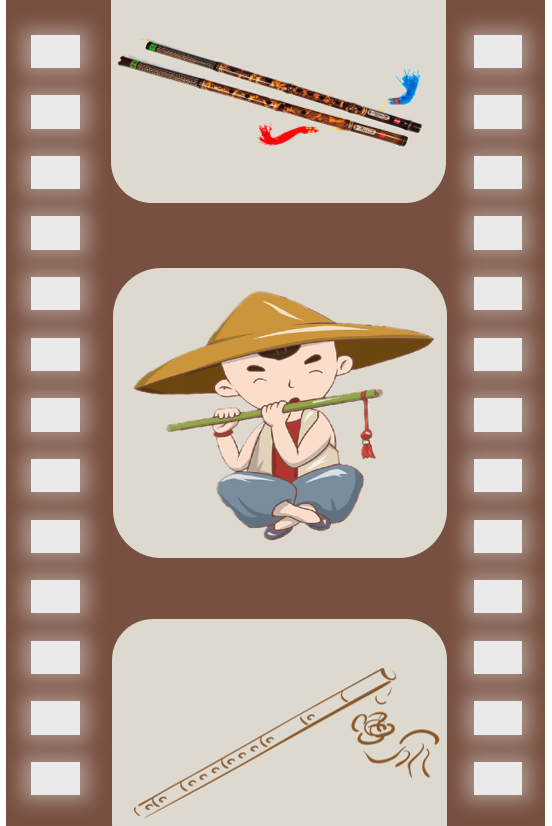
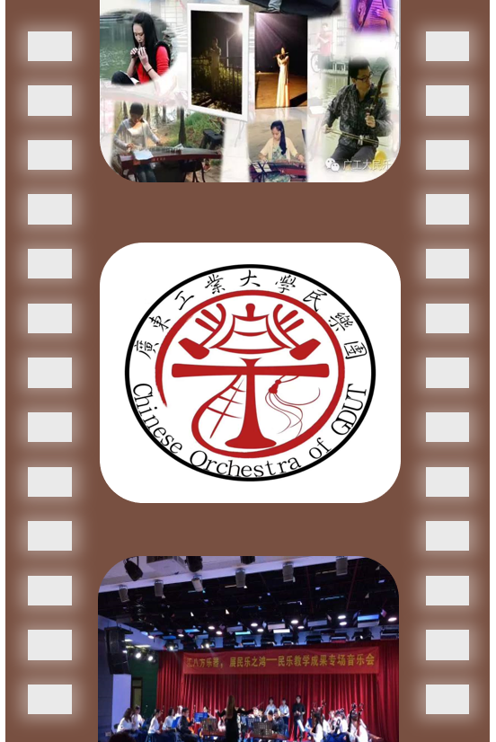

论起中国，我们心中不禁涌起自豪之情，骄傲之心。2019年，是更加繁荣的一年，是新中国的七十大寿，这个年轻的国家，风华正茂，在强大的基础上也有着巨大的富国潜力，是我们坚强的护盾。
我们是中国人，我们是龙的传人！我们不得不惊叹于它的博大精深，源远流长，中华上下五千年的文化，是我们中华人骄傲的魁宝，是我们全人民无价的财富。
中华文化，汇聚了五十六个民族的民风文化。在民俗中体现文化，在文化中彰显民风。民风淳朴，正是其一大特色。在此，我想为大家介绍一种悦耳的特色民乐乐器：笛子。

笛子，是古老的汉族乐器，也是汉族乐器中最具代表性最有民族特色的吹奏乐器。中国传统音乐中常用的横吹木管乐器之一，中国竹笛，一般分为南方的曲笛、北方的梆笛和介于两者之间的中音笛。
笛子常在中国民间音乐、戏曲、中国民族乐团、西洋交响乐团和现代音乐中运用，是中国音乐的代表乐器之一。在民族乐队中，笛子是举足轻重的吹管乐器，被当做民族吹管乐的代表。
大部分笛子是竹制的，但也有石笛、玉笛及红木做的笛子，古时还有骨笛。不过，制作笛子的最好原料仍是竹子，因为竹笛声音效果较好，制作成本较低。
笛在中国古人的观念中早已就赋予了“文化”的含义，笛文化有着将笛及笛艺术所引发的、多边的文化、社会现象进行深入的研究，闪烁着耐人寻味的光辉。
笛类乐器，根据我国近现代民间与专业最普遍的、约定俗成的称谓，“横吹——边棱”类的乐器统称为笛。在这些笛类乐器中，有吹孔靠近乐器封闭端的笛，也有吹孔虽靠近封闭管端，但吹孔平面与指孔平面相交近似于90度夹角的笛，也有吹孔居中的笛。在国家和民间的文艺表演团体以及社会群众业余文化生活中，笛的演奏与应用占有明显的位置。中国的笛在中国长期的历史文化背景中已形成固有的特征并以中国笛文化的鲜明特色成为中国文化的一个组成部分。

提到我国的民乐瑰宝，就不得不提我们广工大的民乐团。广东工业大学民乐团由学生发起，是以在校学生为主体，接受校团委和校学生社团联合会的指导和管理，主要学习民乐演奏与传统音乐艺术推广的学生艺术团体。
我们乐团的宗旨是丰富在校师生的校园生活，弘扬民族传统经典音乐艺术，打造校园特色文化品牌。
广工民乐团自成立以来，已经参与多场大大小小的演出，广受各界好评！如今的目标是成为学校一个极具特色的古典文艺平台，方便学校文娱活动的举办，丰富师生的校园文化生活，活跃校园艺术氛围，通过对中华民族传统文化及音乐艺术的推广，提高广大同学的审美境界及艺术品味，促进校园精神文明建设，提升广东工业大学的知名度。
作为广工的一份子，在国家发展兴盛的同时，我们也要紧跟时代的步伐，奋勇前进。广工民乐团在将来会给我们带来什么样的成果？敬请期待。